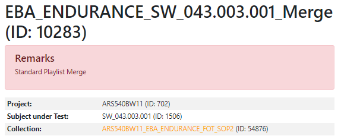

Overview Page#
We can navigate through the whole report on this page. This page contains mainly four-sections as listed below. We will go through these sections in detail.
Report info section
Testcases section
Overview section
Tools section
Statistics and Events section
Hint
All the orange/Continental-colored texts are linked to different pages. These links are available on every page of the report you can use these to navigate around and explore the report structure. (highly recommended)
Report Info section#
The report information section contains the name of the testrun on the top followed by the Testrun number/ID (in brackets). A testrun in TSF is an execution cycle of validation and reporting. Each cycle is provided a testrun number based on the name of the cycle known as testrun name, project, and subject under test. A testrun name can be anything unique enough and verbose enough to explain the motive of the report to developers and users alike. The section some more information such as:
Project is the name of the project as registered in the TSF database followed by the ID of the project in the database.
Subject under Test is the name of the software used to execute the validation and report followed by the ID assigned to it in the database.
Collection is the name of the input collection or input set planned to be used for the report.
Remarks provides a possibility of adding comments to the report as remarks.
We would later discuss how to define and execute a testrun in TSF.
Note
A collection/input set is a container for of test input files (for ex. .mron, .rrecs, .rec etc. The TSF will only consider the input files linked to this input collection for processing and reporting. This allows us to perform repeatable tests with the same input and also select which files should be processed.
Hint
By clicking on the collection name you would be directed to a new page where you have a super filter that can filter recordings with respect to individual testcases, processed teststeps, status, or if they had errors during the process.
For example:
Here, the EBA team chose to have the testrun name (EBA_ENDURANCE) with software release (SW_043.003.001). The team also added a remark to the report as requested by the project.
Hint
It is a good practice to have consistency in your naming convention in order to easily differentiate various report versions.
Testcases section#
This section consists of a table of all the testcases which were part of the report and had a verdict in rows. These rows have the teststeps attached to the testcases as sub-rows/child rows to the testcase row.
This table consists of the following columns:
Spec Tag (Deprecated in version 2.3.19) is an alpha-numeric string of characters and numbers used as identifiers for testcase and teststep requirements in requirement management tools such as DOORS.
URI (New in version 2.4.9) Testcase Uniform Resource Identifier (URI).
Name is the name of testcase or teststep as defined in the requirements as well as the description of the testcase, if defined.
Expected Result is the value which is defined in the requirements for teststeps to compare with such as event rate per X kilometers. (relevant for teststeps)
Measured Result is the value which the framework measured and and got assigned based on teststep’s evaluation. (relevant for teststeps)
Verdict is a result computed for testcases and teststeps. The verdict of testcases depends on teststeps. All teststeps of a testcase have to be passed for a testcase to be PASSED.
You can navigate to testcase page or teststep page by clicking on their respective hyperlinked values in Spec tag column. These pages would be discussed in detail in this section.
Verdicts#
They can be of six types such as:
PASSED: If the result meets the expectation of the requirement.
FAILED: If the result does not meet the expectation of the requirement.
N/A: The testcase and/or teststep was not executed either no simulated data was provided or there was an error during processing.
DATA NOK: If the sensors are performing erratically and provide erroneous data, the result has to be set to DATA NOK. (you have to add those checks in teststeps and assign this measured result)
GROUND TRUTH BROKEN: Similar to DATA NOK, if the ground truth is broken then the result GROUND TRUTH BROKEN has to be set.
INFO: If you would like to have a teststep which shall not affect the testcase verdict.
Overview section#
The overview section consists of Test Case Overview Table which provides an overview over all the executed testcases. It groups the testcases based on their verdicts and categorizes them into five categories such as:
Executed Test Cases is the number of executed testcases.
PASSED Test Cases is the number of testcases with passed as verdict out of executed testcases.
FAILED Test Cases is the number of testcases with failed as verdict out of executed testcases.
N/A Test Cases is the number of testcases with N/A as verdict out of executed testcases
Other Executed Test Cases is the number of testcases with verdicts other than PASSED, FAILED, and N/A as verdict out of executed testcases.
Tools section#
This sections provides some tools which can help the users and developers of the report with information for debugging and informing themselves with setting of the report. This drop down section contains three options (currently) such as:
- Settings provides an overview of report settings such as API-key, API-Server URL, Auto-Scroll Event Details, and Username.
Hint
This information can be used to access TSF REST API. This is mandatory for using the online assessment tool.
Report Itinerary provides a overview of the intermediate processes which the framework performed before providing the report. The report itinerary page provides the location of input bsigs used, the hpc job id which is used for processing the report (when using on-premise setup) with it’s output location, and lastly the command which was executed to generate the report.
About TSF provides information about the TSF version used by the executors for the report. This information can always be found in the footer of the report.
Statistics and Events section#
This sections consists of typically two drop downs namely Statistics and Events (if events and statistics are defined by the test developers). In Events drop down, All Events page is listed which consists table of all the events in the executed set of bsigs. These events can be filtered based on their event attributes and/or assessment attributes. In Statistics drop down, statistics pages are listed which are additional web pages that can be customized by test developers as per the requirement from project. These pages can provide additional information which could fetched from all the testcases. This information could be used for several statistical analysis (such as total distance, total time etc.) or for visualization purposes using plots (such as bar plots, histograms, scatter plots etc.).
Testcase Page#
Testcase page contains two sections which are:
Testcase definition section contains information related to the testcase which were provided while testcases were set up such as:
Spec Tag (Deprecated in version 2.3.19) is an alpha-numeric string of characters and numbers used as an identifier for a testcase requirement in requirement management tool.
URI (New in version 2.4.9) Testcase Uniform Resource Identifier (URI).
Component
Doors-URL
Verifies
Description
Verdict
Testcase overview section contains a table with list of teststep(s) which were assigned to the testcase. This table consists of the following columns:
Spec Tag (Deprecated in version 2.3.19) is an alpha-numeric string of characters and numbers used as identifier for testcase and teststep requirements in requirement management tools such as DOORS.
Name is the name of testcase or teststep as defined in the requirements as well as the description of the testcase, if defined.
Expected Result is the value which is defined in the requirements for teststeps to compare with such as event rate per X kilometers. (relevant for teststeps)
Measured Result is the value which the framework measured and and got assigned based on teststep’s evaluation. (relevant for teststeps)
Verdict is a result computed for testcases and teststeps. The verdict of testcases depends on teststeps. All teststeps of a testcase have to be passed for a testcase to be PASSED.
Confidence is a result computed for testcases and teststeps. The verdict of testcases depends on teststeps. All teststeps of a testcase have to be passed for a testcase to be PASSED.
Teststep Page